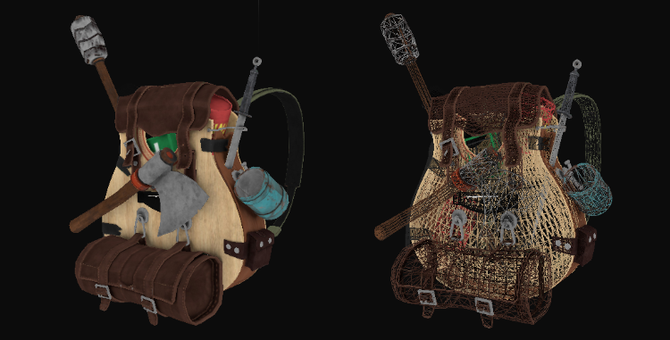
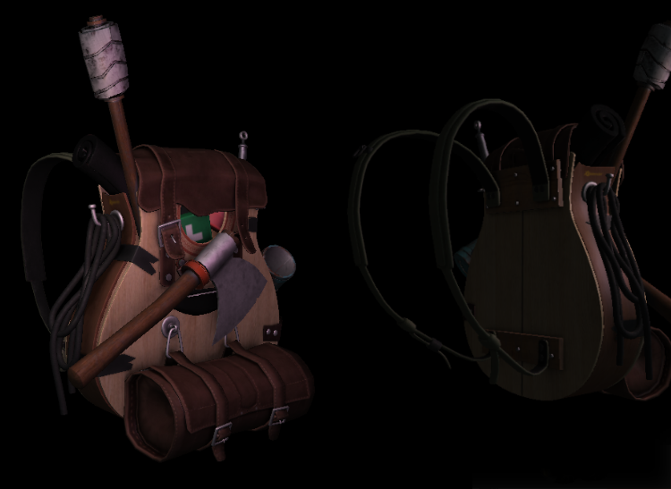

模型
| 原文 | Model |
|---|---|
| 作者 | JoeyDeVries |
| 翻译 | Krasjet |
| 校对 | AoZhang |
现在是时候接触Assimp并创建实际的加载和转换代码了。这个教程的目标是创建另一个类来完整地表示一个模型，或者说是包含多个网格，多个纹理的模型。一个包含木制阳台、塔楼、甚至游泳池的房子可能仍会被加载为一个模型。我们会使用Assimp来加载模型，并将它转换(Translate)至多个在上一节中创建的Mesh对象。
事不宜迟，我会先把
class Model
{
public:
/* 函数 */
Model(char *path)
{
loadModel(path);
}
void Draw(Shader shader);
private:
/* 模型数据 */
vector<Mesh> meshes;
string directory;
/* 函数 */
void loadModel(string path);
void processNode(aiNode *node, const aiScene *scene);
Mesh processMesh(aiMesh *mesh, const aiScene *scene);
vector<Texture> loadMaterialTextures(aiMaterial *mat, aiTextureType type,
string typeName);
};
void Draw(Shader &shader)
{
for(unsigned int i = 0; i < meshes.size(); i++)
meshes[i].Draw(shader);
}
导入3D模型到OpenGL
要想导入一个模型，并将它转换到我们自己的数据结构中的话，首先我们需要包含Assimp对应的头文件：
#include <assimp/Importer.hpp>
#include <assimp/scene.h>
#include <assimp/postprocess.h>
首先需要调用的函数是
Assimp很棒的一点在于，它抽象掉了加载不同文件格式的所有技术细节，只需要一行代码就能完成所有的工作：
Assimp::Importer importer;
const aiScene *scene = importer.ReadFile(path, aiProcess_Triangulate | aiProcess_FlipUVs);
我们首先声明了Assimp命名空间内的一个
- aiProcess_GenNormals：如果模型不包含法向量的话，就为每个顶点创建法线。
- aiProcess_SplitLargeMeshes：将比较大的网格分割成更小的子网格，如果你的渲染有最大顶点数限制，只能渲染较小的网格，那么它会非常有用。
- aiProcess_OptimizeMeshes：和上个选项相反，它会将多个小网格拼接为一个大的网格，减少绘制调用从而进行优化。
Assimp提供了很多有用的后期处理指令，你可以在这里找到全部的指令。实际上使用Assimp加载模型是非常容易的（你也可以看到）。困难的是之后使用返回的场景对象将加载的数据转换到一个
完整的
void loadModel(string path)
{
Assimp::Importer import;
const aiScene *scene = import.ReadFile(path, aiProcess_Triangulate | aiProcess_FlipUVs);
if(!scene || scene->mFlags & AI_SCENE_FLAGS_INCOMPLETE || !scene->mRootNode)
{
cout << "ERROR::ASSIMP::" << import.GetErrorString() << endl;
return;
}
directory = path.substr(0, path.find_last_of('/'));
processNode(scene->mRootNode, scene);
}
在我们加载了模型之后，我们会检查场景和其根节点不为null，并且检查了它的一个标记(Flag)，来查看返回的数据是不是不完整的。如果遇到了任何错误，我们都会通过导入器的
如果什么错误都没有发生，我们希望处理场景中的所有节点，所以我们将第一个节点（根节点）传入了递归的
你可能还记得Assimp的结构中，每个节点包含了一系列的网格索引，每个索引指向场景对象中的那个特定网格。我们接下来就想去获取这些网格索引，获取每个网格，处理每个网格，接着对每个节点的子节点重复这一过程。
void processNode(aiNode *node, const aiScene *scene)
{
// 处理节点所有的网格（如果有的话）
for(unsigned int i = 0; i < node->mNumMeshes; i++)
{
aiMesh *mesh = scene->mMeshes[node->mMeshes[i]];
meshes.push_back(processMesh(mesh, scene));
}
// 接下来对它的子节点重复这一过程
for(unsigned int i = 0; i < node->mNumChildren; i++)
{
processNode(node->mChildren[i], scene);
}
}
我们首先检查每个节点的网格索引，并索引场景的mMeshes数组来获取对应的网格。返回的网格将会传递到
所有网格都被处理之后，我们会遍历节点的所有子节点，并对它们调用相同的
Important
认真的读者可能会发现，我们可以基本上忘掉处理任何的节点，只需要遍历场景对象的所有网格，就不需要为了索引做这一堆复杂的东西了。我们仍这么做的原因是，使用节点的最初想法是将网格之间定义一个父子关系。通过这样递归地遍历这层关系，我们就能将某个网格定义为另一个网格的父网格了。
这个系统的一个使用案例是，当你想位移一个汽车的网格时，你可以保证它的所有子网格（比如引擎网格、方向盘网格、轮胎网格）都会随着一起位移。这样的系统能够用父子关系很容易地创建出来。
然而，现在我们并没有使用这样一种系统，但如果你想对你的网格数据有更多的控制，通常都是建议使用这一种方法的。这种类节点的关系毕竟是由创建了这个模型的艺术家所定义。
下一步就是将Assimp的数据解析到上一节中创建的
从Assimp到网格
将一个aiMesh对象转化为我们自己的网格对象不是那么困难。我们要做的只是访问网格的相关属性并将它们储存到我们自己的对象中。
Mesh processMesh(aiMesh *mesh, const aiScene *scene)
{
vector<Vertex> vertices;
vector<unsigned int> indices;
vector<Texture> textures;
for(unsigned int i = 0; i < mesh->mNumVertices; i++)
{
Vertex vertex;
// 处理顶点位置、法线和纹理坐标
...
vertices.push_back(vertex);
}
// 处理索引
...
// 处理材质
if(mesh->mMaterialIndex >= 0)
{
...
}
return Mesh(vertices, indices, textures);
}
处理网格的过程主要有三部分：获取所有的顶点数据，获取它们的网格索引，并获取相关的材质数据。处理后的数据将会储存在三个vector当中，我们会利用它们构建一个
获取顶点数据非常简单，我们定义了一个mesh->mNumVertices来获取）。在每个迭代中，我们希望使用所有的相关数据填充这个结构体。顶点的位置是这样处理的：
glm::vec3 vector;
vector.x = mesh->mVertices[i].x;
vector.y = mesh->mVertices[i].y;
vector.z = mesh->mVertices[i].z;
vertex.Position = vector;
注意我们为了传输Assimp的数据，我们定义了一个vec3的临时变量。使用这样一个临时变量的原因是Assimp对向量、矩阵、字符串等都有自己的一套数据类型，它们并不能完美地转换到GLM的数据类型中。
Important
Assimp将它的顶点位置数组叫做mVertices，这其实并不是那么直观。
处理法线的步骤也是差不多的：
vector.x = mesh->mNormals[i].x;
vector.y = mesh->mNormals[i].y;
vector.z = mesh->mNormals[i].z;
vertex.Normal = vector;
纹理坐标的处理也大体相似，但Assimp允许一个模型在一个顶点上有最多8个不同的纹理坐标，我们不会用到那么多，我们只关心第一组纹理坐标。我们同样也想检查网格是否真的包含了纹理坐标（可能并不会一直如此）
if(mesh->mTextureCoords[0]) // 网格是否有纹理坐标？
{
glm::vec2 vec;
vec.x = mesh->mTextureCoords[0][i].x;
vec.y = mesh->mTextureCoords[0][i].y;
vertex.TexCoords = vec;
}
else
vertex.TexCoords = glm::vec2(0.0f, 0.0f);
vertex结构体现在已经填充好了需要的顶点属性，我们会在迭代的最后将它压入vertices这个vector的尾部。这个过程会对每个网格的顶点都重复一遍。
索引
Assimp的接口定义了每个网格都有一个面(Face)数组，每个面代表了一个图元，在我们的例子中（由于使用了aiProcess_Triangulate选项）它总是三角形。一个面包含了多个索引，它们定义了在每个图元中，我们应该绘制哪个顶点，并以什么顺序绘制，所以如果我们遍历了所有的面，并储存了面的索引到indices这个vector中就可以了。
for(unsigned int i = 0; i < mesh->mNumFaces; i++)
{
aiFace face = mesh->mFaces[i];
for(unsigned int j = 0; j < face.mNumIndices; j++)
indices.push_back(face.mIndices[j]);
}
所有的外部循环都结束了，我们现在有了一系列的顶点和索引数据，它们可以用来通过
材质
和节点一样，一个网格只包含了一个指向材质对象的索引。如果想要获取网格真正的材质，我们还需要索引场景的mMaterials数组。网格材质索引位于它的mMaterialIndex属性中，我们同样可以用它来检测一个网格是否包含有材质：
if(mesh->mMaterialIndex >= 0)
{
aiMaterial *material = scene->mMaterials[mesh->mMaterialIndex];
vector<Texture> diffuseMaps = loadMaterialTextures(material,
aiTextureType_DIFFUSE, "texture_diffuse");
textures.insert(textures.end(), diffuseMaps.begin(), diffuseMaps.end());
vector<Texture> specularMaps = loadMaterialTextures(material,
aiTextureType_SPECULAR, "texture_specular");
textures.insert(textures.end(), specularMaps.begin(), specularMaps.end());
}
我们首先从场景的mMaterials数组中获取aiMaterial对象。接下来我们希望加载网格的漫反射和/或镜面光贴图。一个材质对象的内部对每种纹理类型都存储了一个纹理位置数组。不同的纹理类型都以aiTextureType_为前缀。我们使用一个叫做
vector<Texture> loadMaterialTextures(aiMaterial *mat, aiTextureType type, string typeName)
{
vector<Texture> textures;
for(unsigned int i = 0; i < mat->GetTextureCount(type); i++)
{
aiString str;
mat->GetTexture(type, i, &str);
Texture texture;
texture.id = TextureFromFile(str.C_Str(), directory);
texture.type = typeName;
texture.path = str;
textures.push_back(texture);
}
return textures;
}
我们首先通过aiString中。我们接下来使用另外一个叫做stb_image.h）加载一个纹理并返回该纹理的ID。如果你不确定这样的代码是如何写出来的话，可以查看最后的完整代码。
Important
注意，我们假设了模型文件中纹理文件的路径是相对于模型文件的本地(Local)路径，比如说与模型文件处于同一目录下。我们可以将纹理位置字符串拼接到之前（在
在网络上找到的某些模型会对纹理位置使用绝对(Absolute)路径，这就不能在每台机器上都工作了。在这种情况下，你可能会需要手动修改这个文件，来让它对纹理使用本地路径（如果可能的话）。
这就是使用Assimp导入模型的全部了。
重大优化
这还没有完全结束，因为我们还想做出一个重大的（但不是完全必须的）优化。大多数场景都会在多个网格中重用部分纹理。还是想想一个房子，它的墙壁有着花岗岩的纹理。这个纹理也可以被应用到地板、天花板、楼梯、桌子，甚至是附近的一口井上。加载纹理并不是一个低开销的操作，在我们当前的实现中，即便同样的纹理已经被加载过很多遍了，对每个网格仍会加载并生成一个新的纹理。这很快就会变成模型加载实现的性能瓶颈。
所以我们会对模型的代码进行微调，将所有加载过的纹理全局储存，每当我们想加载一个纹理的时候，首先去检查它有没有被加载过。如果有的话，我们会直接使用那个纹理，并跳过整个加载流程，来为我们省下很多处理能力。为了能够比较纹理，我们还需要储存它们的路径：
struct Texture {
unsigned int id;
string type;
aiString path; // 我们储存纹理的路径用于与其它纹理进行比较
};
接下来我们将所有加载过的纹理储存在另一个vector中，在模型类的顶部声明为一个私有变量：
vector<Texture> textures_loaded;
之后，在
vector<Texture> loadMaterialTextures(aiMaterial *mat, aiTextureType type, string typeName)
{
vector<Texture> textures;
for(unsigned int i = 0; i < mat->GetTextureCount(type); i++)
{
aiString str;
mat->GetTexture(type, i, &str);
bool skip = false;
for(unsigned int j = 0; j < textures_loaded.size(); j++)
{
if(std::strcmp(textures_loaded[j].path.data(), str.C_Str()) == 0)
{
textures.push_back(textures_loaded[j]);
skip = true;
break;
}
}
if(!skip)
{ // 如果纹理还没有被加载，则加载它
Texture texture;
texture.id = TextureFromFile(str.C_Str(), directory);
texture.type = typeName;
texture.path = str.C_Str();
textures.push_back(texture);
textures_loaded.push_back(texture); // 添加到已加载的纹理中
}
}
return textures;
}
所以现在我们不仅有了个灵活的模型加载系统，我们也获得了一个加载对象很快的优化版本。
Attention
有些版本的Assimp在使用调试版本或者使用IDE的调试模式下加载模型会非常缓慢，所以在你遇到缓慢的加载速度时，可以试试使用发布版本。
你可以在这里找到优化后
和箱子模型告别
所以，让我们导入一个由真正的艺术家所创造的模型，替代我这个天才的作品（你要承认，这些箱子可能是你看过的最漂亮的立方体了），测试一下我们的实现吧。由于我不想让我占太多的功劳，我会偶尔让别的艺术家也加入我们，这次我们将会加载由Berk Gedik设计的吉他生存背包(Survival Guitar Backpack)。我稍微修改了材质和路径，这样便可与我们的模型加载代码兼容。这个模型被输出为一个.obj文件以及一个.mtl文件，.mtl文件包含了模型的漫反射、镜面光和法线贴图（这个会在后面学习到），你可以在这里下载到稍微修改之后的模型，注意，我们不会用到它的一些额外的纹理类型，并且所有的纹理和模型文件应该位于同一个目录下，以供加载纹理。
Important
你从本网站中下载到的版本是修改过的版本，每个纹理的路径都被修改为了一个本地的相对路径，而不是原资源的绝对路径。
现在在代码中，声明一个

你可以在这里找到完整的源码。注意我们通过stb_image.h来垂直翻转纹理，如果你在我们加载模型之前没有这样做会导致纹理看起来完全混乱。
我们可以变得更有创造力一点，根据我们之前在光照教程中学过的知识，引入两个点光源到渲染方程中，结合镜面光贴图，我们能得到很惊人的效果。

甚至我都必须要承认这个可能是比一直使用的箱子要好看多了。使用Assimp，你能够加载互联网上的无数模型。有很多资源网站都提供了多种格式的免费3D模型供你下载。但还是要注意，有些模型会不能正常地载入，纹理的路径会出现问题，或者Assimp并不支持它的格式。
延伸阅读
- 如何将Wavefront(.obj)模型纹理加载到OpenGL:由Matthew Early制作的如何在Blender中设置3D模型的视频教程，让它们可以直接在当前的模型加载器下正确工作(因为我们选择的纹理设置并不总能做到开箱即用)。